Lesson content · 课文
Lesson 38: What are you going to do? What are you doing now? · 你准备做什么？你现在正在做什么？
Listen and answer the questions. 听录音并回答问题。
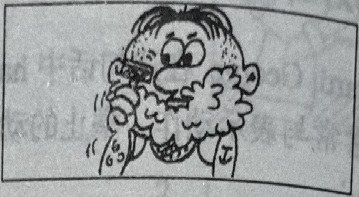
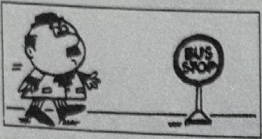
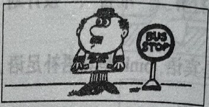
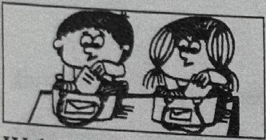
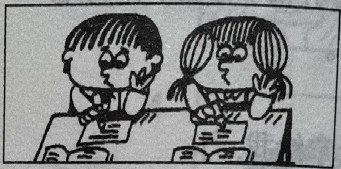
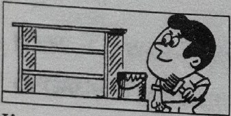
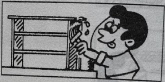
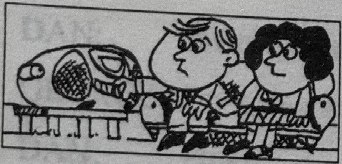
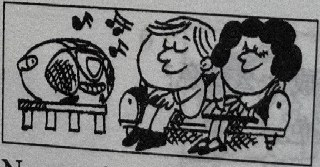
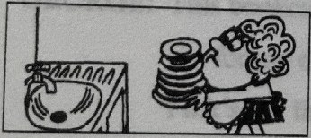
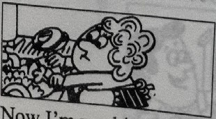
New words and expressions · 生词和短语
| Word · 单词 | Pronunciation · 音标 | Meaning · 词义 |
|---|---|---|
| homework | /ˈhəʊmwɜːk/ | n. 作业 |
| listen | /ˈlɪsən/ | v. 听 |
| dish | /dɪʃ/ | n. 盘子，碟子 |
Practice · 课文练习
Written exercises · 书面练习
A. Am, is or are
Complete these sentences using am, is or are. 完成以下句子，用 am、is 或 are 填空。
Example · 例句
What are you doing?
We are reading.
-
textbook: A. Am, is or are — What ____ you doing? We ____ reading.
-
textbook: A. Am, is or are — What ____ they doing? They ____ doing their homework.
-
textbook: A. Am, is or are — What ____ he doing? He ____ working hard.
-
textbook: A. Am, is or are — What ____ you doing? I ____ washing the dishes.
B. Questions and answers · 对话练习
Write questions and answers. 模仿例句写出相应的对话。
Example · 例句
paint this bookcase
What are you going to do?
I’m going to paint this bookcase.
What are you doing now?
I’m painting this bookcase.
-
textbook: B. Questions and answers · 对话练习 — shave
-
textbook: B. Questions and answers · 对话练习 — wait for a bus
-
textbook: B. Questions and answers · 对话练习 — do my homework
-
textbook: B. Questions and answers · 对话练习 — listen to the stereo
-
textbook: B. Questions and answers · 对话练习 — wash the dishes
Practice worksheet · 配套练习
A. Short forms
Rewrite using short forms. 用缩写形式抄写以下句子。
Example · 例句
She is going to wait. → She’s going to wait.
-
worksheet: A. Short forms — They are going to read.
-
worksheet: A. Short forms — He is going to shave.
-
worksheet: A. Short forms — I am going to listen to the stereo.
-
worksheet: A. Short forms — You are going to work hard.
-
worksheet: A. Short forms — It is going to be hot.
B. Questions
Give a negative answer about now, then say what is going to happen. 模仿例句回答以下问题。
Example · 例句
Is he painting the bookcase now? — No, he isn’t, but he’s going to paint the bookcase.
-
worksheet: B. Questions — Are you putting on your coat?
-
worksheet: B. Questions — Is she washing the dishes?
-
worksheet: B. Questions — Are they doing their homework?
-
worksheet: B. Questions — Are you reading the newspaper?
-
worksheet: B. Questions — Is he flying to England?
-
worksheet: B. Questions — Are they looking at the school?
-
worksheet: B. Questions — Is she typing some letters?
-
worksheet: B. Questions — Are you waiting for a bus?
-
worksheet: B. Questions — Are they reading magazines?
C. Situations
What do you say? 根据以下情景写出你应该说的话。
-
worksheet: C. Situations — Someone wants a book and you hand it to them.
-
worksheet: C. Situations — You want to know what someone will do next.
Grammar practice · 语法练习
I. Answer the questions, using the cues given according to the example
- 1. What are you going to do? (I/drink tea)
I'm going to drink tea.
- 2. What are you going to do? (we/wait for the bus)
- 3. What are you going to do? (I/turn on the television)
- 4. What are you going to do? (I/make a bookcase for my son)
- 5. What are you going to do? (we/do our homework)
- 6. What are you going to do? (I/read a magazine)
- 7. What are you going to do? (we/paint our doors)
- 8. What are you going to do? (we/walk across the street)
II. Answer the questions according to the examples
1.
- a. Are you working now?
No, I'm not, and I'm not going to work.
- b. Are you doing your homework now?
- c. Are you dusting the bookcase now?
- d. Are you cleaning your shoes now?
- e. Are you putting on your tie now?
- f. Are you reading a book now?
- g. Are you cooking now?
- h. Are you shaving now?
2.
- a. This window is dirty. (I/clean)
I'm going to clean it now.
- b. The pencils are blunt. (I/sharpen)
- c. The baskets are full. (we/empty)
- d. Our books are closed. (we/open)
- e. The desks and chairs are dusty. (we/dust)
- f. Emma's bed is untidy. (I/make)
- g. I am cold. (I/put on my coat)
- h. We're thirsty. (we/drink tea)
Your notes and answers
Use this space for longer responses or exercises that do not have an individual answer box.